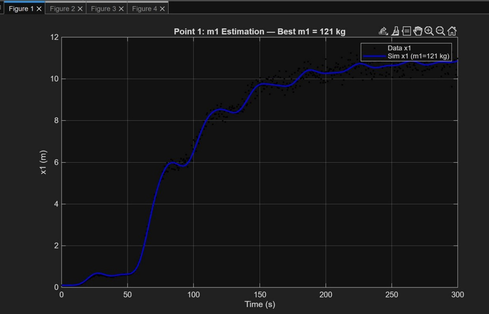

Numerical Computing & Data Analysis
Dynamic System Simulation & Parameter Estimation
Developed a MATLAB numerical simulation of a multi-mass dynamic system and used noisy measurement data to estimate unknown physical parameters and analyze system behavior.
- Implemented Forward Euler numerical integration
- Used mean squared error to estimate unknown system parameters
- Performed parameter sweeps and analyzed simulated time-series data